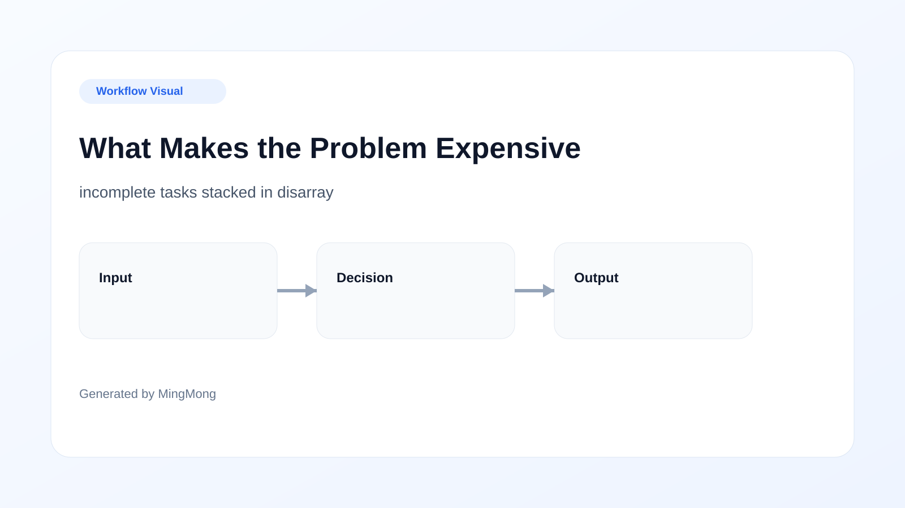
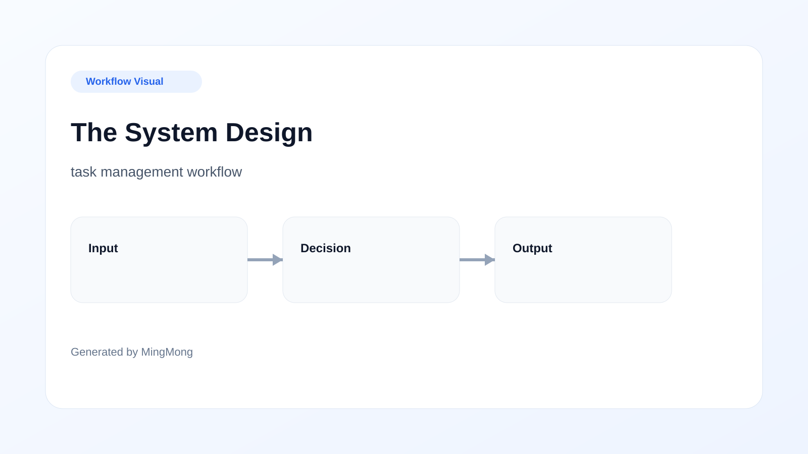
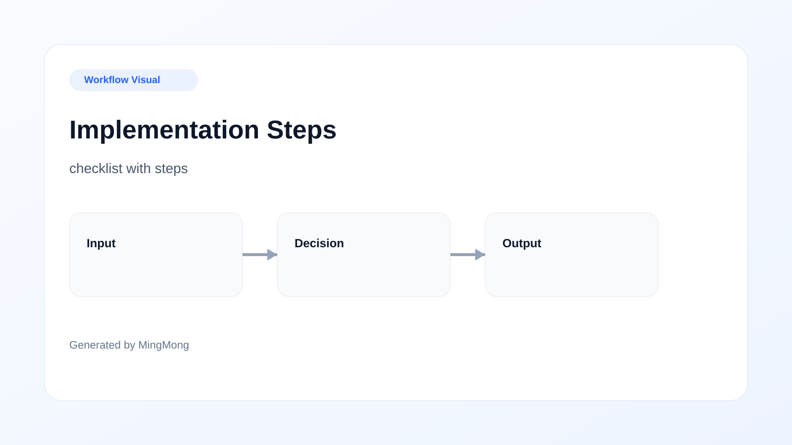
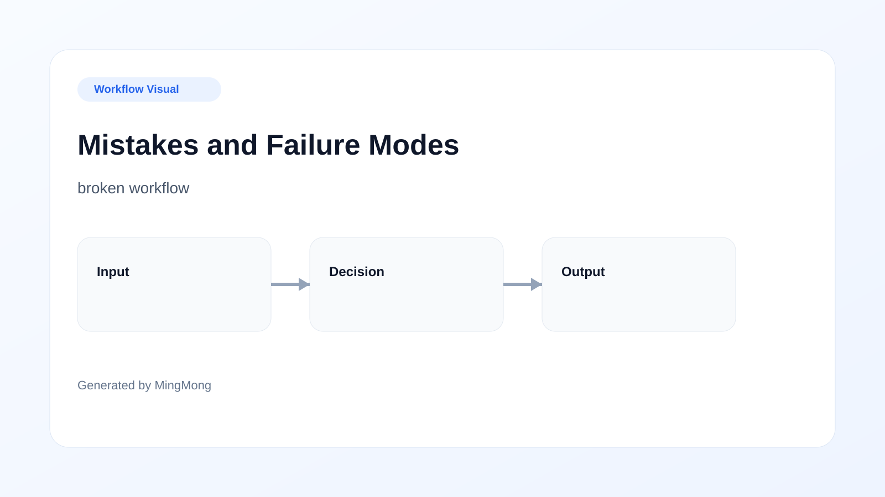

Editorial note: This article has been reviewed for practical usefulness and is updated regularly to reflect changes in effective workflows.
TL;DR
Implementing a structured task capture system significantly enhances productivity for remote operators handling async work, especially during meetings. Awareness of common pitfalls and tradeoffs allows teams to optimize their workflow and task management efficiently.
Who This Is For and the Trigger Moment
Remote operators often work in isolated environments, juggling various projects and tasks without the traditional office structure. They include project managers, software developers, and remote customer service representatives, all of whom rely on virtual meetings and asynchronous communication. A common trigger moment for these professionals is during online meetings when discussions flow rapidly, and important tasks are often assigned. However, note-taking can be haphazard, leading to missed details. The challenge is to develop a streamlined workflow that ensures critical tasks are captured and acted upon efficiently.

What Makes the Problem Expensive
Neglecting task capture can lead to significant losses in productivity and stakeholder trust. When remote workers miss vital information during meetings, it creates a domino effect of incomplete tasks, missed deadlines, and increased stress levels. Beyond financial implications, the reputational cost can tarnish professional relationships. The reality is that poor task capture results in additional layers of complexity, forcing remote teams to circle back to incomplete work, leading to a vicious cycle of inefficiency and missed opportunities.

The System Design
An effective task capture system for remote workers should revolve around key components designed for ease of use. Start with a centralized system where tasks can be logged immediately after discussing them. Integrate automated reminders to prompt users before deadlines. Collaboration features are vital; coworkers can comment and provide updates on tasks. Prioritize user-friendliness—if the system is too complicated, remote workers are unlikely to adopt it consistently. A structured workflow ensures that everyone who is a part of a project knows their responsibilities and deadlines, reducing the chance of errors and missed tasks.

Implementation Steps
Setting up a task capture system requires a clear, step-by-step approach. First, define the initial setup process, which includes selecting the task management tool and creating templates for meetings that cover key agenda items and action points. Next, conduct a training session with the team to ensure everyone understands how to use the system effectively. Regularly monitor and assess how the system is functioning and adjust it as needed. Follow up with feedback sessions to gather insights from the team, helping to refine the workflow. The completion of these steps fosters continual improvement and ensures the system remains relevant down the line.
Tool Choice and Process Boundaries
Choosing the right tools for your task capture system is paramount to its success. Evaluate tools based on criteria like ease of integration with existing workflows, user support, and customization options. Popular options include Trello for visual task management and Asana for detailed task tracking. However, be mindful of the tradeoffs involved; a tool that is feature-rich can overwhelm users if not carefully implemented. Define process boundaries by setting guidelines on when and how to use the tools, ensuring that team members do not encounter task overload, which can stifle productivity and lead to mistakes.

Mistakes and Failure Modes
Common pitfalls in task capture systems include failing to prioritize tasks effectively or neglecting to keep the task list updated. Another mistake is overcomplicating the task capture process, which can result in team members simply reverting to informal note-taking methods. Such oversights will undoubtedly increase the likelihood of missed deadlines, misunderstandings, and, ultimately, project failures. A visual diagram can illustrate these failure modes, providing a tangible way for remote teams to understand and rectify mistakes before they spiral out of control.
When Not to Use This
While implementing a task capture system can be beneficial, it’s crucial to know the contexts where this approach may backfire. If your team is already overwhelmed with tasks and struggling to manage their workload, adding another system can create confusion rather than clarity. Additionally, for highly creative teams that thrive on spontaneity, a strict task capture process might stifle their innovative spirit. Situational examples include small teams on quick turnarounds where traditional methods may serve better than a structured system.
Copyable Operating Checklist
To ensure the successful implementation of the task capture system, make use of a reusable checklist. This checklist can contain action items such as 'define project roles,' 'select task management tools,' 'schedule training sessions,' and 'review system effectiveness regularly.' Each item should be easy to follow and actionable, serving as a go-to reference for remote teams. By providing this checklist, you allow remote operators to streamline their task capture process, mitigate stress, and enhance accountability.
FAQ
What tools work best for task capture?
Tools like Trello and Asana offer intuitive designs that cater to various needs and help streamline task management.
How can I train my team on the new system?
Conduct comprehensive training sessions that include hands-on practice and regular follow-ups for feedback and adjustment.
How can I assess the effectiveness of my task capture system?
Regularly review deadlines and project outcomes, solicit team feedback, and fine-tune the process as needed.
What are some common mistakes to avoid during implementation?
Overcomplicating the task capture process and neglecting regular updates on tasks are frequent issues that hinder effectiveness.
When should I reconsider using a task capture system?
If your team is already overwhelmed or if creativity is stifled, it may be beneficial to revert to a more flexible approach.
Search more articles
Find related tools, workflows, and guides.